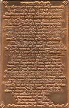

-
Finding your way around
- I'm lost! How do I find my way around this website? (link to "Help")
- What are some good starting places in this website? (link to "Beginnings")
- What is Theravada Buddhism? (link to "What is Theravada Buddhism?")
- Which suttas should I read? (link to "Befriending the Suttas")
- How should I read the suttas? (link to "Befriending the Suttas")
- What is that funny symbol I see next to some hyperlinks?
- Where's the search engine?
-
General questions about the website
- What is Access to Insight?
- How did Access to Insight start?
- How can I contact you?
- If Access to Insight isn't run by an organization, why does its URL end in ".org"?
- Is Access to Insight affiliated with any meditation center or monastery?
- How do you decide which texts to include on the website?
- Why don't you have translations of ALL the suttas from the Pali canon?
- Why don't you have such-and-such a sutta (or article)?
- Why don't you have any translations or articles by so-and-so?
- Why don't you have any translations or articles in languages other than English?
- Whom can we thank for making all these texts available?
- Who translated the suttas on this website?
- How can I help Access to Insight?
- May I make a donation to support this project?
- What is the significance of the graphic on the home page?
-
Using the website
- How do I download the entire website? (link to "Downloading the Entire Website")
- How do I download and uncompress those pesky ZIP files? (link to "Working with ZIP files")
- What's the difference between the various versions of Access to Insight?
- I have a [cellphone/ebook-reader/other cool device]. How do I read Access to Insight on it? (link to "ATI on many devices")
- How do I subscribe to the RSS feed?
-
Copyright and terms of use
- Are Access to Insight's texts in the public domain?
- Are these texts protected by copyright?
- May I copy your pages onto my website?
- May I sell copies of materials from your website in order to raise money for a non-profit cause?
- May I sell copies of materials from your website if I charge just enough to recover the costs of printing, etc.?
- May I ask people to make a "suggested donation" in exchange for copies of these texts?
- May I include a short excerpt of a text from your website in a publication that I plan to sell?
- How should I cite references to Access to Insight?
-
Miscellaneous
- Can you please send me some books?
- Can I get print copies of the books on your website?
- Can you recommend any online Buddhist discussion groups?
- How do I write [insert English word or phrase here] in the original Pali script?
- Can you please tell me how to say [insert English phrase here] in Pali?
- What are some good beginning books on Buddhism?
- Where can I find a copy of the complete Pali canon (Tipitaka)?
Finding your way around
- What is that funny little symbol I see next to some hyperlinks?
It's a reminder that, when you click on that link, your browser will open a new window and display a page from another website. It's also a reminder that I have no control over what, exactly, you'll see when you go to that site.
- Where's the Search Engine?
The search engine is only available in the online edition of this website. It is not available in this offline version.
General questions about the website
- What is Access to Insight?
-
Access to Insight is an Internet website dedicated to providing accurate, reliable, and useful information concerning the practice and study of Theravada Buddhism, as it has been handed down to us through both the written word of the Pali canon and the living example of the Sangha.
Access to Insight is not an organization and is not affiliated with any institution. It is simply one person's website. Although I have studied the Buddha's teachings for many years as a dedicated lay follower, I have no academic degrees in either the Pali language or Buddhist Studies. In these pages I have therefore relied on the translations and interpretations of other respected scholars, teachers, and practitioners who have far more experience and wisdom than do I.
The readings assembled here represent just a selection of the Buddha's teachings. These are the ones that, over the years, I've personally found to be helpful in deepening an understanding of Dhamma practice. This collection is not meant to be an exhaustive archive of Theravada Buddhist texts.
I've tried to avoid injecting my own views and opinions into these web pages. Some biases, however, inevitably intrude, owing to the editorial choices I've made and the short introductory essays and blurbs I've written here and there to give some context to the material being presented. I sincerely hope that my biases do not in any way obscure the real meaning of the texts themselves.
Everything available at Access to Insight is offered in full cooperation with the authors, translators, and publishers concerned, with the clear understanding that none of it is to be sold. Please help yourself to whatever you find useful. (For a detailed explanation of the copyright status of materials on the website, please read "Copyright and Related Issues.")
- How did Access to Insight start?
-
In early 1993, with the help of the Barre Center for Buddhist Studies, I set up in my basement a computer bulletin board service (BBS) to see if networked computers might be genuinely useful as a support for students and practitioners of Buddhism. Originally dubbed "BCBS OnLine," the BBS soon joined DharmaNet's international network of dialup Buddhist BBS's and adopted the name "Access to Insight." Shortly thereafter, Barry Kapke launched DharmaNet's Dharma Book Transcription Project, of which I served as librarian, and under whose auspices about a hundred high-quality books on Buddhism were transcribed to computer through the dedicated efforts of an international team of volunteer transcribers and proofreaders. These books were soon distributed via DharmaNet to scores of BBS's around the world. In 1994 I installed a dialup Internet e-mail connection that allowed anyone on the Internet to retrieve these books via an e-mail file server. This proved to be a popular service. By late 1994 the BBS — now independent of BCBS — spent far more of its time serving file requests from around the world via the Internet than in handling the requests of local callers. Internet users from far and wide were coming to depend on Access to Insight's now rickety and overworked '386 computer as their link to information — both the timely and the timeless — about Buddhism. In March 1995 this website was born; eight months later I closed down the BBS for good.
Today Access to Insight continues to grow: what began in 1993 as a modest collection of two or three suttas and a handful of articles has blossomed into a library of more than one thousand suttas and several hundred articles and books. With the release of the Handful of Leaves CD-ROM in 1998 and 1999, these texts are now reaching an even wider audience and being further redistributed around the world in print and electronic media.
To explore ATI's history in obsessive detail, see the archives of old news summaries.
- How can I contact you?
-
If you have a question, please first check to see if it is already answered in the FAQ, the Help file, the Indexes, or the Search Engine.
Please understand that Access to Insight isn't an organization and there are no staff here — it's just me. I do not have time to answer — or even acknowledge — all the emails that I receive. If you have questions about the content of this website — or about the Dhamma in general — please consult a teacher or a knowledgeable friend. I'm just the librarian. I am always grateful, however, to receive reports of errors (broken links, typos, etc.).
email: editor[AT]accesstoinsight[DOT]org post: John Bullitt
P.O. Box 37
Milbridge, ME 04658
USAor visit my website. - If Access to Insight isn't run by an organization, why does its URL end in ".org"?
-
A .com top-level domain isn't quite right since I'm not selling anything. .net isn't quite right either, since the website isn't part of a network. .org suggests a non-commercial entity, which this site certainly is. Maybe someday we'll have more top-level domains to choose from (.disorg or .notcom would be nice). Until that day comes, Access to Insight will muddle along, a squarish peg in a web of roundish holes.
- Is Access to Insight affiliated with any meditation center or monastery?
No.
- How do you decide which texts to include on the website?
-
One overarching principle has guided my choice of what to include in these pages, and what to leave out: a conviction that the teachings found in the Pali canon are just as relevant today as when they were first put into practice 2,600 years ago. Despite all the obvious material advances in the human world since the Buddha's time, the Four Noble Truths appear to be as vital today as ever: suffering and stress still pervade our lives; the cause still appears to be craving in all its insidious manifestations; and there is no reason to suspect that the Noble Eightfold Path is any less effective today at bringing an end to all that suffering and stress.
The emphasis here is on practice. For the most part I've selected books, articles, and sutta translations that I've personally found helpful to develop a better understanding of the Buddha's teachings, rather than texts that tend to fuel intellectual debates on abstract philosophical concepts. Beyond these basic principles, it all comes down to a matter of personal taste.
If you are looking for authors or teachers who are not represented on Access to Insight, a simple Google search may be fruitful.
See also: Why don't you have translations of ALL the suttas from the Pali canon?
-
Why don't you have translations of ALL the suttas from the Pali canon?
Why don't you have such-and-such a sutta (or article)?
Why don't you have any translations or articles by so-and-so? -
This website aims to be selective rather than comprehensive. My goal has never been to publish translations of every single one of the Tipitaka's 10,000-plus suttas. What you see here is a selection of suttas that meet three criteria: (1) they are, in my opinion, good translations; (2) I have personally found them useful; and (3) their copyright holders have provided them for free distribution.
There are many other fine translations of important suttas available in print today, and I encourage you to support their continued publication by purchasing copies. Someday, perhaps, these publishers will make those translations available freely to all. Until then, however, we must learn to make do with what we have. Happily, what we already have is pretty darn wonderful.
The same criteria apply to my selection of books, articles, and other materials on the site.
See also: How do you decide which texts to include on the website?
- Why don't you have any translations or articles in languages other than English?
-
Years ago I decided to limit Access to Insight's content exclusively to the English language, simply because I am fluent only in English. I prefer not to put anything on the website that I can't understand myself.
If you're looking for Theravada texts in other languages, please see "Off-site resources: Non-English Tipitaka translations".
- Whom can we thank for making all these texts available?
-
My role in assembling Access to Insight has primarily been that of facilitator and librarian, helping to bring together under one virtual roof the fruits of the hard work of many people: authors, translators, publishers, transcribers, and proofreaders. The unstinting generosity and commitment to the Dhamma demonstrated by these many contributors continues to amaze and inspire me. If you have found anything of value at Access to Insight please join me in thanking those who have made this website possible:
- Bhikkhu Bodhi, former President of the Buddhist Publication Society in Kandy, Sri Lanka, for allowing many of the BPS's publications (including its Wheel and Bodhi Leaves titles, among others) to be transcribed to computer and distributed on the Internet.
- Thanissaro Bhikkhu (Ajaan Geoff), for kindly making available all his own books and articles, as well as his translations of teachings by many of the great Thai forest masters. Ajaan Geoff has also provided the vast majority of Access to Insight's sutta translations (close to one thousand of them are his).
- The many volunteer transcribers and proofreaders who have given their time and energy to make available so many fine Dhamma books: Antony Woods, Barry Kapke, Ben Nugent, Bill Petrow, Blake Smith, Bob Heckel, Bradford Griffith, Chitra Weirich, Christopher Sessums, Colleen McCaffrey, David Savage, Dorothea Bowen, Dimitri Zhelvakov, Eileen Santer, Elba Kunsman, Gary Gunning, Gaston Losier, George Fowler, Greg Smith, Heath Row, Henry Jie, Hugo Gayosso, James Stewart Jane Yudelman, Jason Chang, Jim McLaughlin, Joe Crea, John Dixon, Julian Chase, Kavee Wijay, Laura Wright, Lee Lin Ong, Li Chun, Mahendra Siriwardene, Malcolm Rothman, Mark Blackstad, Matt Klopfstein, Maureen Riordan, Michael Kalyaano, Michael Sproul, Michael Zoll, Myra I. Fox, Oliver First, Olivia Vaz, Pat Lapensee, Patricia Anderson, Peter Jones, Phil Lesco, Philip Jurgens, Philip L. Jones, Raj Mendis, Robert Bussewitz, Robert Kokeny, Sabine Miller, Sean Hoade, Stephen Ball, Steven McPeak, Thiep Sam, Tom Fitton, Vincent Halahakone, Vivek Mohile, and several others who asked to remain anonymous.
- The hundreds of people who have offered helpful criticisms and suggestions over the years, or who have developed software tools that are now part of ATI. A few of these people deserve special note for their outstanding contributions: Binh Anson, AppMagination, Jamie Avera, Jakub Bartovsky, Gabriel Bittar, Emily Bullitt, Mark Byrne, Chan Kian Koon, Chun Hoe Chow, John Fabian, Alexander Genaud, Hugo Gayosso, John Kelly, Bhikkhu Kumara (Liew Chin Leag), Michael Olds, Trevor Rhodes, Larry Rosenfeld, Steve Russell, Andy Shaw, Michael Sproul, Antony Woods, Chandra Yenco, and A. Zuback.
- The many people who have offered their help in the form of technical assistance and financial support over the years.
- Jane Yudelman, for her encouragement in 1992 that got Access to Insight off the ground in the first place, and for her continued advice and support that help this project continue to mature.
Thank you all.
- Who translated the suttas on this website?
The sutta translations were made by many esteemed translators, including: Venerables Bhikkhu Bodhi, Acharya Buddharakkhita, Bhikkhu Khantipalo, Ñanamoli Thera, Ñanavara Thera, Narada Thera, Nyanaponika Thera, Soma Thera, Thanissaro Bhikkhu (Phra Ajaan Geoff), and Sister Vajira; I.B. Horner, John D. Ireland, K.R. Norman, and F.L. Woodward. For a complete list of translators, see "Contributing Sutta Translators".
- How can I help Access to Insight?
-
Here are a few ways you can help:
- Proofreading.
- Report any typos, spelling errors, grammatical blunders, broken links, or any other problems in ATI's pages. Keep a close eye especially on new items as they appear on Access to Insight's What's New page, as these generally haven't yet been seen by many eyes.
- Link-scouting and link-checking.
- As you surf the web, keep an eye out for Theravada websites that might be of interest to Access to Insight's visitors. If it's not already listed in the Other Theravada Sources pages, perhaps it should be. While you're at it, let me know of any broken links to external websites.
- Meditate.
- Put into practice the Dhamma teachings described in the suttas, articles, and books on the website. That's what they're here for.
- May I make a donation to support this project?
-
I offer everything on this website as a free gift. I neither solicit nor expect donations of any kind. If you feel moved to make a donation to support this work, I invite you to make a donation to any of the charitable institutions affiliated with the authors or translators whose work you find particularly rewarding. Alternatively, you may simply make a donation to the charity of your choice. In the Buddha's words, "Give wherever the mind feels confidence" [SN 3.24].
- What is the significance of the graphic on the home page?
-
The graphic (left) that appears on the home page is a stylized rendition of a copper amulet (below, left) that was made and consecrated in Thailand in 2005. The amulet depicts an image of the Buddha meditating under the arch of a protective deity, or naga, in a design popularized by Somdet Toh (1788-1872).[1] The reverse (below, right) contains the Pali text (in Thai script) of the Jinapañjara Gatha ("The Victor's Cage"; see "A Chanting Guide"), a traditional protective chant that describes a person surrounded on all sides by a field of extraordinary purity and goodness: the Triple Gem, all the past Buddhas, all the Buddha's elder arahant disciples, and — as if that weren't enough — all the suttas. In a dangerous and frightening world it is hard to imagine a safer place in which to dwell.
But, of course, it is the purity and goodness of the mind that offers the only true protection. By seeking out the company of a kalyanamitta (spiritual friend) and by training oneself to infuse the mind only with what is good and noble, progress on the path of Dhamma is assured. The Victor's Cage — and the amulet on which it appears — thus serves as metaphor and reminder of the admirable qualities of mind that the practicing Buddhist strives to develop. As with the ten recollections, reflecting on the Victor's Cage offers encouragement when the chips are down: I am not alone in this endeavor; I can do this. In times of anxiety and stress, when the mind is most susceptible to wandering off into unskillful states, a recollection like this is sometimes all that's needed to restore the mind to balance and to steer it onwards down the path. And sometimes the familiar feel of a well-worn amulet between one's fingers is enough to do the trick.
My hope is that this website may serve its visitors in much the same way.
Note
- 1.
- I'm grateful to a reader (Lam Cheng Poh) for pointing out that the arch above the Buddha has another possible interpretation. LCP writes:
"Most Thai amulet collectors view the arch as a bell. Somdej Toh was abbot of Wat Rakang, i.e., Bell Temple, and the bell has given its name to the arch. The arch is invariably referred to as a "rakang" in any amulet of this iconography.
"The naga-over-the-Buddha amulets (ie Phra Nakprok) typically feature a 7-headed Mucalinda and are not known to be stylised into an abstract arch.
"I suspect the amulet is issued by one of 3 temples closely associated with Somdet Toh, ie Wat Rakang, Wat Inn and Wat Bangkhunpom, where he made many of these amulets. The Jinapanjara Katha began to be featured on these amulets some 4 years ago, because Somdet Toh was supposed to have used that katha to consecrate all of his amulets. A more likely reason is that the minting technology finally caught up and permitted the katha to be squeezed onto the small surface area."
— from an email received on 28 August 2008.
For more about Somdet Toh see "The Legends of Somdet Toh" and ThailandAmulets.com.
{kind=link}
Using the website
- What's the difference between the various versions of Access to Insight?
-
The Offline Edition is a snapshot of the online Access to Insight website at a particular day and time that you may download onto your computer for offline browsing. The CD-ROM edition contains all that, plus PDF files and perhaps a few other goodies. The differences between the various versions of Access to Insight are summarized here:
Live website Offline Edition CD-ROM
(v. 7.10)CD-ROM file
(ISO 9660 image)Basic website (html files) Search engine PDF files
(after Sept 2013)"What's new" and old news "Surprise me" links Techie stuff Attractive, compact, and tangible package that makes a nice gift to hand to a friend - How do I use the RSS feed?
-
ATI's RSS feed is a handy way to keep track of what's new at Access to Insight, without actually visiting the "What's New" section of the home page.
There are several ways to use the feed:
- Chrome. Install the RSS Subscription extension. Then point your browser to ATI's home page. You should see the RSS icon in the address bar. Click on that icon and a new tab should open, revealing the contents of the feed along with some options for saving it.
[These directions work for me on Google Chrome (Mac) version 15.0.874.121. Your mileage may vary.] - Firefox. Install the RSS Icon extension. Then point your browser to ATI's home page. You should see the RSS icon in the address bar. Click on that icon and a pop-up menu will appear, inviting you to save the feed as a "live bookmark". You can then visit that bookmark at any time to view the feed.
[These directions work for me on Firefox (Mac) version 8.0.1. YMMV.] - Safari. Point your browser to ATI's home page. You should see the RSS icon in the address bar. Click on that icon and the feed should appear, accompanied by a host of options in the sidebar. To save the feed as a bookmark, look for the "Actions" section of the sidebar and select "Add Bookmark..."
[These directions work for me on Safari (Mac) version 5.0.6. YMMV.] - Apple Mail. Pull down the "File" menu and select "Add RSS Feeds...". In the window that appears, click the "Specify a custom feed" button and paste this URL into the text box: http://www.accesstoinsight.org/rss/news.rss.php then click "Add". The feed will appear in the "RSS" section of the left sidebar of the main Mail window. You can optionally choose to have new feed items appear in your Mail in-box.
[These directions work for me on Apple Mail (Mac) version 3.6. YMMV.] - Any old newsreader. Paste this feed URL into your newsreader program: http://www.accesstoinsight.org/rss/news.rss.php
If these directions don't work for you, and you suspect that ATI's RSS feed might be broken, before contacting me please double-check that you are able to access a feed from another website. A good feed to test is the one at New York Times.
- Chrome. Install the RSS Subscription extension. Then point your browser to ATI's home page. You should see the RSS icon in the address bar. Click on that icon and a new tab should open, revealing the contents of the feed along with some options for saving it.
Copyright and terms of use
- Are Access to Insight's texts in the public domain?
- Only the files from the Sri Lanka Tripitaka Project are in the Public Domain. All the rest are protected by copyright. See Are these texts protected by copyright?
- Are these texts protected by copyright?
-
Yes. You may copy and redistribute any texts from this website, provided that you abide by one basic principle:
You may not sell any texts copied or derived from this website.
The files on this website are made available to you thanks to the generosity of dozens of authors, translators, publishers, and transcribers, all of whom contributed their efforts with the explicit understanding that the fruits of their labors would be given away free of charge, as an expression of dana. You may download these files to your computer, print them out, read them, share them with your friends, copy them to your own website, translate them into other languages, and redistribute them electronically — provided that you do not charge any money for them. They are not in the public domain.
There are several different kinds of copyright licenses attached to the pages of Access to Insight. You'll find details about the license at the bottom of each page of the website.
- May I copy your pages onto my website?
Yes, provided that you make them available free of charge. I also ask that you please post a simple notice somewhere on your website acknowledging that the materials came from here. Although I don't require it, as a service to your visitors you might also consider including a link to www.accesstoinsight.org, so that your visitors can easily get hold of the most up-to-date editions of these texts (I steadily receive corrections and revisions from translators, authors, and publishers). Finally, please make it clear to your visitors what material on your site comes from here and what comes from other sources.
- May I sell copies of materials from your website in order to raise money for a non-profit cause?
May I sell copies of materials from your website if I charge just enough to recover the costs of printing, etc.? -
No. The amount you charge is irrelevant: if you charge one penny or one thousand dollars, you're still selling. It doesn't matter if you're hoping to make a profit or not. What you do with the money you receive is irrelevant. These teachings are to be given away, not sold.
Requiring someone to pay for reproduction costs or for shipping costs (packaging, postage, etc.) is equivalent to selling. If you were sending a birthday gift to a beloved family member, would you enclose a bill for the wrapping paper, ribbon, and postage? Of course not. A gift is a gift.
- May I ask people to make a "suggested donation" in exchange for copies of these texts?
-
Please be very careful here. As long as you make it crystal clear that anyone may receive a copy free for the asking — regardless of whether he or she makes a donation — then that's fine. You should put no pressure — subtle or otherwise — on anyone to pay. These teachings are to be given away, not sold.
- May I include a short excerpt of a text from your website in a publication that I plan to sell?
If the excerpt falls within the scope of "Fair Use" (see Wikipedia), then you are free to use the excerpt and no further permission is required. If the excerpt is more substantial, then you must first obtain permission from the author of that text. Please contact the author directly for permission.
- How should I cite references to Access to Insight?
-
If you're writing a paper for a school or university, you should check with your instructor to see what citation standards you are expected to follow.
To cite individual pages from the website, you might consider the citation format that's shown in the colophon at the bottom of every page.
To cite the entire website, you might use something like this:
"Access to Insight" (http://www.accesstoinsight.org), John Bullitt, ed., DATE.
where DATE is the revision date that appears at the bottom of the home page.
When citing articles from a CD-ROM edition of the website, you can use this common form:
Disc title: Version, Date. "Article title," author or translator. Publisher.
Some examples:Access to Insight: CD-ROM version 7.10, October 2007. "Refuge: An Introduction to the Buddha, Dhamma, and Sangha," Thanissaro Bhikkhu. Access to Insight.
Access to Insight: CD-ROM version 7.10, October 2007. "Vatthupama Sutta (MN 7)," Nyanaponika Thera, trans. Buddhist Publication Society/Access to Insight.
Miscellaneous
- Can I get print copies of the books on your website?
-
Many of the books, articles, and translations appearing on this website are also available in print form from various publishers. Here is a partial list of sources for some of these printed books:
Author Title Available from Bodhi, Bhikkhu A Comprehensive Manual of Abhidhamma Buddhist Publication Society [Sri Lanka] Boowa, Maha (various) Wat Pah Baan Taad Monastery [Thailand] Dune, Ajaan Gifts He Left Behind Metta Forest Monastery [USA] Lee, Ajaan (various) Metta Forest Monastery [USA] Mahasi Sayadaw The Progress of Insight Buddhist Publication Society [Sri Lanka] Narada Thera Buddhism in a Nutshell Piyadassi Thera The Book of Protection Soma Thera The Way of Mindfulness Suwat, Ajaan A Fistful of Sand Metta Forest Monastery [USA] Thanissaro Bhikkhu Handful of Leaves Sati Center for Buddhist Studies [USA] Dhammapada: A Translation Metta Forest Monastery [USA] The Mind Like Fire Unbound An Unentangled Knowing Wings to Awakening (various) The Wheel and Bodhi Leaves Publications Buddhist Publication Society [Sri Lanka] - Can you please send me some Dhamma books?
Unfortunately, I have neither the time nor the resources to fulfil the many requests for books that I receive from all over the world. There are, however, several publishers of free Dhamma books that would be happy to send you some books free of charge.
- Can you recommend any online Buddhist discussion groups?
There are many online discussion groups that cover Buddhist topics — too many to list here. You'll have to do the research on your own: Google is just a click away.
If you're looking for a Pali discussion group, try here.
- How do I write [insert English word or phrase here] in the original Pali script?
There is no Pali script. Pali is a spoken language with no alphabet of its own. Pali texts can be written phonetically using just about any alphabet: Devanagari, Thai, Burmese, Roman, Cyrillic, Klingon, etc. Writing Pali in non-Indic languages, however, often requires the addition of special accents or diacritics to signify certain sounds not represented in the standard alphabet. So, if you are looking for a hand-written version of the word mettā for a tattoo or a painting, it's very easy: you can write it out yourself, in any alphabet you like.
The Pali texts were first written down several centuries after the Buddha's death, at the Fourth Buddhist Council. To see what those early — and beautiful! — written transcriptions look like, visit the Fragile Palm Leaves Foundation website. To find a particular word or passage within those ancient manuscripts, you'll have to find a scholar who specializes in them.
- Can you please tell me how to say [insert English phrase here] in Pali?
Please consider posting your query on an online Pali language forum. There are probably students and scholars there who would be happy to help.
- What are some good beginning books on Buddhism?
-
- Buddhist Dictionary, by Nyanatiloka Mahathera (Kandy: Buddhist Publication Society, 1980). A classic handbook of important terms and concepts in Theravada Buddhism. A valuable reference for newcomers and veterans, alike.
- Buddhist Religions: A Historical Introduction (fifth edition) by R.H. Robinson, W.L. Johnson, and Thanissaro Bhikkhu (Belmont, California: Wadsworth, 2005). An excellent introductory college-level text that traces the evolution of all the major schools of Buddhism from their beginnings to the present day.
- Eight Mindful Steps to Happiness by Ven. Henepola Gunaratana (Somerville, MA: Wisdom Publications, 2001). An excellent guide to bringing the eightfold path into one's daily life.
- The Experience of Buddhism: Sources and Interpretations (second edition) by John S. Strong (Belmont, California: Wadsworth, 2002). A very useful anthology of excerpts from key Buddhist texts representing all the major schools of Buddhism. Although intended primarily as a companion to Robinson & Johnson's The Buddhist Religion (fourth edition) (see Buddhist Religions, above), it stands well on its own.
- Mindfulness in Plain English by Ven. Henepola Gunaratana (Somerville, MA: Wisdom Publications, 1992). A clear and helpful introduction to the practice of mindfulness meditation.
- Noble Strategy: Essays on the Buddhist Path by Thanissaro Bhikkhu (1999; available from Metta Forest Monastery). A fine collection of introductory essays, which are also available individually here on the website.
- Refuge: An Introduction to the Buddha, Dhamma, & Sangha by Thanissaro Bhikkhu (Geoffrey DeGraff) (1996; Available from Metta Forest Monastery). A collection of short essays and readings from the Pali suttas that explain the basic principles of living and practicing the path of Dhamma.
- What the Buddha Taught by Walpola Rahula (New York: Grove Press, 1986). An overview of the teachings of Theravada Buddhism, including chapters on each of the Four Noble Truths, along with excerpts from selected suttas and the Dhammapada. For several decades, a standard introductory text. Readily available at many bookstores.
- See also "Beginnings," which includes suggested readings on beginning meditation practice.
- Where can I find a copy of the complete Pali canon (Tipitaka)?
-
- Print editions:
-
If you're thinking of purchasing your own printed copy of the Tipitaka, be forewarned: the Pali canon is huge; owning a complete set is a serious commitment. The Pali Text Society's edition of the Tipitaka (English translation) fills over 12,000 pages in approximately fifty hardbound volumes, taking up about five linear feet of shelf space, and costing about US$2,000. Moreover, a few of the more obscure books in the Tipitaka are simply unavailable in English translation, so if you really must read the entire Tipitaka, you'll just have to learn Pali. The PTS has for over a century been the leading publisher of the Tipitaka, both in romanized Pali and in English translation, but many of their translations are now badly out of date. Much better translations of several portions of the Canon are now available from other publishers. Here are my recommendations for printed translations that add up to a useful — if incomplete — version of the Tipitaka:
- Vinaya Pitaka. The Book of the Discipline, I.B. Horner, trans. (Oxford: Pali Text Society, 1993) [6 vols]. To study the many rules for bhikkhus and bhikkhunis that are scattered throughout the Vinaya Pitaka, see Thanissaro Bhikkhu's The Buddhist Monastic Code, Volume I: The Patimokkha Training Rules Translated and Explained and The Buddhist Monastic Code, Volume II: The Khandhaka Training Rules Translated and Explained
-
Sutta Pitaka. An excellent anthology of selected suttas and texts from the five Nikayas is Handful of Leaves, Thanissaro Bhikkhu, trans. (Santa Cruz: Sati Center for Buddhist Studies, 2003) [4 vols.]. Translations from specific portions of the Nikayas include the following:
- Digha Nikaya: The Long Discourses of the Buddha (formerly titled Thus Have I Heard), Maurice Walshe, trans. (Somerville, MA: Wisdom Publications, 1987) [1 vol.]
- Majjhima Nikaya: The Middle Length Discourses of the Buddha, Bhikkhu Ñanamoli and Bhikkhu Bodhi, trans. (Somerville, MA: Wisdom Publications, 1995) [1 vol.]
- Samyutta Nikaya: The Connected Discourses of the Buddha, Bhikkhu Bodhi, trans. (Somerville, MA: Wisdom Publications, 2000) [2 vols.]
- Anguttara Nikaya: Numerical Discourses of the Buddha: A Complete Translation of the Anguttara Nikaya, Bhikkhu Bodhi, trans. (Somerville, MA: Wisdom Publications, 2012) [1 vol.]. See also: The Book of Gradual Sayings, F.L. Woodward and E.M. Hare, trans. (Oxford: Pali Text Society, 1994) [5 vols.]
-
Khuddaka Nikaya (for a more detailed list, see the Khuddaka Nikaya page):
- Khuddakapatha: Handful of Leaves (Vol. 4), Thanissaro Bhikkhu, trans. (Santa Cruz: Sati Center for Buddhist Studies, 2003) [1 vol.]
- Dhammapada: Dhammapada: A Translation, Thanissaro Bhikkhu, trans. (Barre, Massachusetts: Dhamma Dana Publications, 1997; available from Metta Forest Monastery); The Dhammmapada: Pali Text and Translation with Stories in Brief and Notes, prose translation by Narada Thera (Buddhist Missionary Society, 1978; available from Pariyatti Books) [1 vol.]
- Udana: The Udana and the Itivuttaka, John D. Ireland, trans. (Kandy: Buddhist Publication Society, 1998) [1 vol.]
- Itivuttaka: Itivuttaka: This Was Said by the Buddha, Thanissaro Bhikkhu, trans. (Barre, Massachusetts: Dhamma Dana Publications, 2001) [1 vol.] or Handful of Leaves (Vol. 4), Thanissaro Bhikkhu, trans. (Santa Cruz: Sati Center for Buddhist Studies, 2003) [1 vol.]
- Suttanipata: The Group of Discourses (2nd ed.), K.R. Norman, trans. (Oxford: Pali Text Society, 2001) [1 vol.]
- Theragatha, Therigatha: Elders' Verses, prose translation by K.R. Norman (Oxford: Pali Text Society, 1992) [1 vol.]
- Vimanavatthu, Petavatthu, Patisambhidamagga, Buddhavamsa, Cariyapitaka, Nettippakarana, Petakopadesa, Milindapañha: translations, of varying quality, are available from the PTS.
- Apadana, Niddesa: I'm unaware of any English translations of these books.
-
Abhidhamma Pitaka. The essence of Abhidhamma philosophy is contained in the first and last of the Abhidhamma's seven books; only rarely do scholars and students wade into the murky waters of the middle five. So, begin with these two books:
- Dhammasangani: Buddhist Psychological Ethics, Mrs. C.A.F. Rhys Davids, trans., 3rd ed. (Oxford: Pali Text Society, 1993) [1 vol.]
- Patthana: Conditional Relations, Ven. U Narada, trans. (Oxford: Pali Text Society, 1993) [2 vols.]
- Electronic editions:
- Several complete Pali-only versions of the Tipitaka (in roman and other scripts) are available on-line and on CD-ROM. As far as I know, Access to Insight has the largest online collection of English language Tipitaka texts.